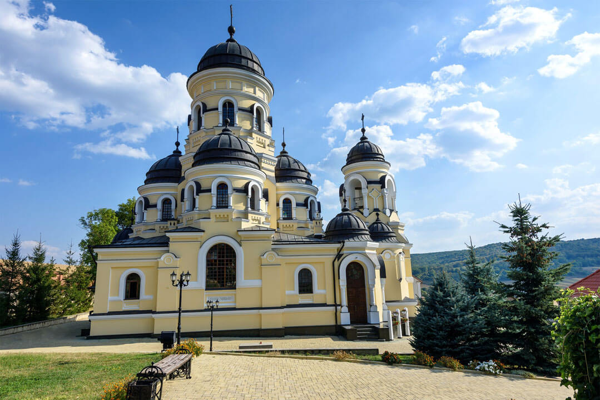

Moștenirea Timpului
Epoca de Aur
Teritoriul Moldovei a fost conturat de-a lungul secolelor sub domnia marilor voievozi, cea mai de seamă perioadă fiind guvernată de Ștefan cel Mare. Arhitectura cetăților fortificate stă și astăzi mărturie a unei istorii bogate și tumultuoase.
Aflată la confluența marilor imperii, cultura locului s-a rafinat, integrând influențe estice și vestice într-o identitate autentică, definită de artă, credință și un profund respect pentru pământ.


Patrimoniu Istoric și Cultural
Situată pitoresc pe malul râului Nistru, Cetatea Soroca reprezintă una dintre cele mai importante fortificații militare din piatră construite de Ștefan cel Mare. Cu arhitectura sa circulară unică, a fost un bastion defensiv crucial împotriva invaziilor otomane și tătare.
Această bijuterie medievală continuă să fie un simbol al rezistenței și păstrează vie memoria vremurilor eroice, atrăgând vizitatori dornici să pășească pe urmele voievozilor.
Spiritualitate și Religie
Așezată în inima codrilor seculari, Mănăstirea Căpriana este unul dintre cele mai vechi și sfinte lăcașuri de cult din țară, datând de la începutul secolului al XV-lea. A servit drept reședință pentru mitropoliții Moldovei și a fost patronată de domnitori iluștri.
Reprezentând nucleul spiritualității ortodoxe, complexul monahal emană o liniște profundă. Pelerinii sunt atrași de arhitectura bisericească rafinată și de atmosfera de pace absolută oferită de natura înconjurătoare.
